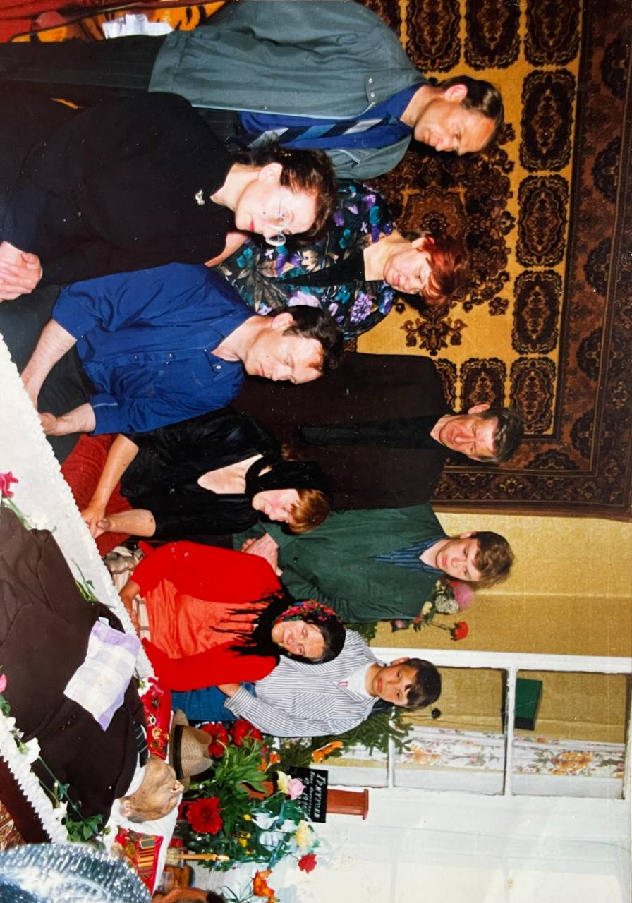
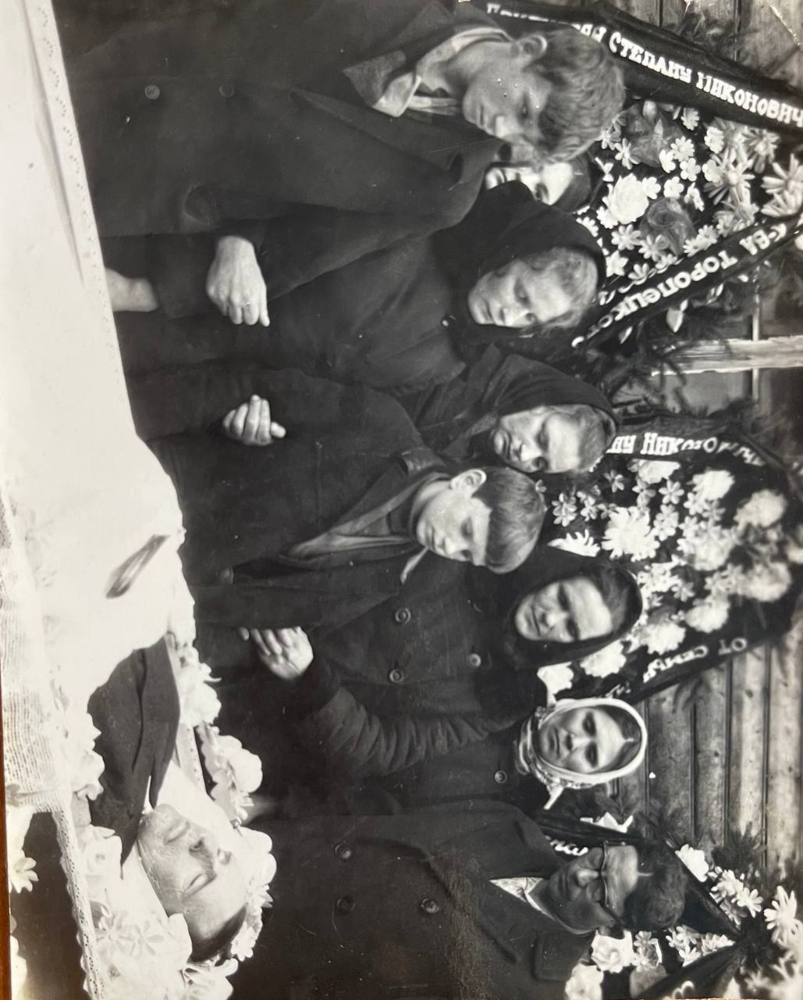

Новикова Агапья - мама Ануфриевой Анастасии Никоновны
умерла в беженцах в 43 года в д.Окуневка, дочке (Анастасии) было 12 лет.
Винкевич Ганна - двоюродная сестра (д.Медведево Горецкий р-н)
Гритусев Никон Яковлевич - отец Ануфриевой Анастасии Никоновны
Работал в колкозе. Умер через год после жены, в 43 года от Тифа. Похоронен в д.Медведево (т.Алла и д.Леня Ануфриевы (внук) ездят на могилку).
Сестра двоюродная Инна (г.Минск)
Ануфриев Иван
Жил на Сахалине. Учился в институте Авиации. Был Майором. Умер в Заславье Минская обл. в 72 года, были проблемы с легкими.
У него было 3 сына: Витя (г.Минск, дети: Вика, Леша (Савушкин продукт))
Ануфриев Степан
Жил в г.Торопец Московская область. Учился в г.Минске на бухгалтера. Был начальником обувной фабрики. Умер в 40 лет. Лег спать и умер, накануне пропустил немного, видимо, сердце.
Жена Тоня
Два сына:
Ануфриев Николай
Жил в д.Медведево, работал в колхозе. Работящий был мужчина "золотые руки", построил дом (Ануфриевой Анастасии Никоновне, своей младшей сестре (д.Ходоровичи).
Умер в 66 лет. Избили.
Дети: Тома г.Горки дети: Оксана (Могилев), Саша(Горки).Леня г.Горки дети: Дима (Бирмингем Англия), Леша(Горки)
Была замужем два раза.
Дети: Анатолий, Нина (муж Потапенко Иван), Татьяна, Леонид (муж Ануфриев Кузьма)
Муж: Потапенко Иван. Его мама: Хадора - лечила руками. Умерла в 82 года 8 марта 1992г. Похоронена в д.Ходоровичи (Ухаживает д.Валера)
брат родной Василь (похороненд.Ходоровичи Горецкий р-н). Дети: Галя (умерла в Могилеве. Детей не было. Была с рождения больна), Таня (Могилев) дети: Ира, Света (Могилев)
сестра родная Тоня (похоронена д.Нивищи Горнецкий р-н). Дети: Вова (Москва), Валера (Минск)
Муж: Ануфриев Кузьма. Его мама: Ануфриева Мария, Отец: Ануфриев Архалам (похоронены д.Ходоровичи).
- братья родные: Ануфриев Василь (жена Рая, есть дочь и внучка) живут на Дальнем Востоке. Брат Сергей умер, не был женат, детей нет.
- сестры: Полина (фамилия после по мужу Смирнова). Галина (фамилия после по мужу Шабельник) живут в С-Петербурге.